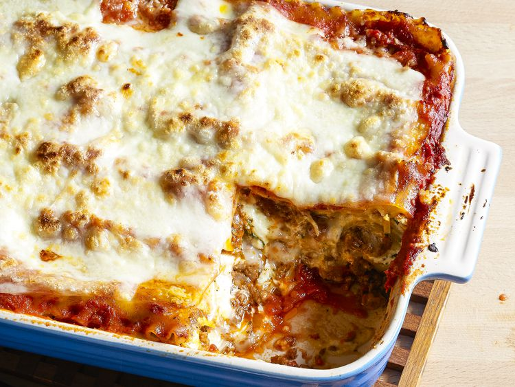

Lasagna

This lasagna recipe takes a little work, but it is so satisfying and filling that it's worth
it!
Submitted by John Chandler
Updated on February 5, 2026
Ingredents
- Meat
- Onion and Garlig
- Tomato products
- Spices and seasonings
- Lasagna noodles
Directions
- Gather all ingredients. Preheat the oven to 350 degrees F (175 degrees C).
- Bring a large pot of lightly salted water to a boil. Cook lasagna noodles in boiling water, stirring occasionally, until tender yet firm to the bite, about 8 minutes. Drain, rinse with cold water, and set aside.
- Meanwhile, place chicken in a large saucepan with enough water to cover; bring to a boil. Cook until chicken is no longer pink and the juices run clear, about 20 minutes. Remove chicken from the saucepan and shred.
- Combine shredded chicken, 1 cup mozzarella cheese, and cream cheese in a large bowl. Dissolve hot water and bouillon in a liquid measure; pour over chicken mixture and stir until well combined.
- Bake in the preheated oven for 45 minutes.
- Spread 1/3 of the spaghetti sauce in the bottom of a 9x13-inch baking dish. Cover with 1/2 of the chicken mixture and top with 3 lasagna noodles; repeat. Top with remaining sauce and sprinkle with remaining 1 cup mozzarella cheese.
Home